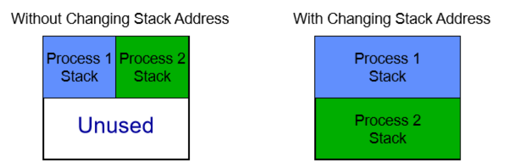
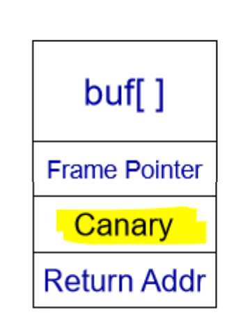
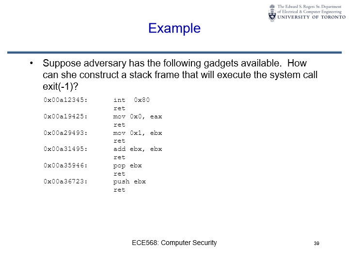

Vulneranilities#
Stack related vulnerabilities
Buffer Overflow
Format String
Double Free
Note: For Buffer Overflow, Format String, Double Free vulnerabilities please refer to Lab1 - private repo and lecture notes
Here we only discuss defence mechanisms for these vulnerabilities.
Architecture Difference#
Similarity in Assembler Code: The assembler code for both 32-bit and 64-bit architectures appears quite alike, but there are significant differences when delving deeper.
Register Naming Conventions:
In the 32-bit architecture, registers are named with a “e” prefix (e.g.,
eax,ebx). These registers can hold 32-bit values.In contrast, the 64-bit architecture uses a “r” prefix (e.g.,
rax,rbx). These can hold 64-bit values, which allows for the handling of larger data and memory addresses.
Addition of New Registers: The 64-bit architecture introduced eight new general-purpose registers, labeled
r8throughr15. This increases the number of registers available for operations, which can lead to performance improvements in certain scenarios.Calling Conventions:
When functions are called in a program, they often require arguments. How these arguments are passed to the function can differ between architectures and operating systems.
In the 64-bit architecture on Linux, the “System V AMD64 ABI” calling convention is employed. The first six arguments are passed using the registers
rdi,rsi,rdx,rcx,r8, andr9, instead of pushing them onto the stack.On the other hand, Windows uses a different calling convention, referred to as the “Microsoft ABI”.
These distinctions play a crucial role in areas like software development, reverse engineering, and computer security. Understanding these differences can be essential, especially when working closely with low-level programming or system optimization.
Avoiding Cache Collisions#

Hyper-threaded processors have two logical processors that share an instruction cache.
A potential issue arises when two processes have their stacks at the same address, leading to cache collisions. These collisions can degrade performance as the processes will keep evicting each other’s data from the cache.
To address this problem, the operating system adjusts the stack addresses based on the lower-bits of the process PID (using a mod function).
Address-Space Layout Randomization (ASLR)#
ASLR is a security technique used by operating systems to prevent exploitation of memory vulnerabilities.
When a new process starts, its stack is mapped to a random location in memory. This randomization makes it difficult for attackers to predict the exact address of specific buffers or other memory locations.
If attackers can’t predict memory addresses, it becomes much harder for them to exploit buffer overflows or similar vulnerabilities. If they try, their attacks will most likely cause the application to crash rather than giving them unauthorized access.
Defence 1: Preventing Buffer Overflow#
Stack Canary#
Stackshield: Put return addresses on a separate stack with no data
StackGuard: Put a Canary value before the return address 
Function pointer#
Function pointers are variables that hold the address of a function. They allow functions to be called indirectly and are used to implement callbacks and table-driven approaches, among other things. Function pointers can be especially useful for creating flexible and modular code.
Examples:
Declaration and Initialization:
int add(int a, int b) {
return a + b;
}
int (*funcPtr)(int, int) = add;
Using Function Pointers:
int result = funcPtr(3, 4); // Calls 'add' function and result will be 7
Array of Function Pointers: Useful for creating a table-driven approach.
int subtract(int a, int b) {
return a - b;
}
int (*operations[2])(int, int) = {add, subtract};
Now, operations[0](5, 3) will return 8 (addition) and operations[1](5, 3) will return 2 (subtraction).
By overwriting the function pointer, the attacker can cause execution to be redirected next time the program calls the function pointer.
Dynamic Linking#
Dynamic linking is a technique in which programs rely on libraries to execute certain functions. Instead of having all the code integrated into the executable, dynamic linking allows the executable to “link” to external libraries and use their functionalities. This is done to save memory and allow for easier updates of shared functionalities. Here’s a breakdown of the information provided:
Dynamic Linking:
Purpose:
Allows programs to call functions like
printffrom dynamic libraries.Saves memory and permits one library to be updated without needing to recompile all the programs that use it.
How it Works:
Libraries are linked at runtime, not at compile time.
The actual location in memory where the library gets loaded can vary.
Code is compiled to be position independent.
Mapping:
The position-independent function call is mapped to the actual location of the function in the library.
This mapping is performed by the dynamic linker.
Uses two primary tables: the Procedure Linkage Table (PLT) and the Global Offset Table (GOT).
Procedure Linkage Table/Global Offset Table#
GOT (Global Offset Table):
Contains function pointers.
Holds the absolute memory location of each dynamically-loaded library function. These exact locations are only determined at runtime.
PLT (Procedure Linkage Table):
Consists of small functions.
Each library function used by the program has one function in the PLT.
On its first call, the PLT function invokes the dynamic linker to provide the actual function’s location in the GOT.
The library itself is also loaded from the disk the first time any of its functions are called.
Security Implication - PLT/GOT Overwrites#
Potential Attack:
If an attacker can overwrite a memory location, they might target a GOT function pointer.
Overwriting a GOT pointer can change where a function call in the program redirects to, potentially leading to execution of malicious code.
Binary Analysis:
Tools like
objdump -xallow for the disassembly of an executable, providing insights into the locations of these structures.The PLT and GOT typically reside at known locations in memory.
Platform Specifics:
The PLT/GOT mechanism described here is specific to ELF binaries, typically found in UNIX systems.
Windows and Mac systems implement dynamic linking differently.
Overflow Arguments#
char buf[128] = "my program";
char vulnerable [32];
exec(buf);
overflow vulnerable to overwrite buf and execute my program
Defence 2: Preventing Execution of Code#
Non-Executable Memory Pages#
Since 2004, leading processor manufacturers, including Intel and AMD, have incorporated support for non-executable memory pages. This functionality allows designated memory regions to be marked as non-executable, ensuring that they are solely treated as data, rather than executable code.
For users of Windows operating systems, this feature is recognized as “Data
Execution Prevention” or DEP. Despite the security advantages of DEP, certain
methods, like the Return into LibC technique, can bypass these measures.
This technique exploits standard C library functions, such as exec and
system, enabling execution despite the DEP restrictions.
Return-oriented Programming (ROP)#
Concept:
If you can’t achieve your malicious goal with one function from the standard library (libc), you can link multiple functions together using a corrupted stack.
When one function completes, the system looks on the corrupted stack to see which function to execute next.
Method:
Standard libraries like libc have a lot of code.
Instead of returning to the start of a function, you can make the program return to any part of the code.
In the middle of functions, there are return instructions. Due to the variable nature of x86 instructions, it’s possible to return in between instructions.
This variability allows the discovery of “gadgets”: small chunks of code that perform desired actions followed by a return instruction. With the right combination, you can make the system do almost anything.
Using ROP can be as powerful as having the ability to run any code (Turing complete).
Challenges:
Need for larger attack code sections.
Produces many returns, which can be noisy.
Example:

Certainly, the image depicts a classic scenario in Return-Oriented Programming (ROP), where an adversary uses existing code snippets, termed “gadgets”, to execute arbitrary operations. The goal here is to construct a stack frame that will execute the system call exit(-1). Let’s break this down step by step:
Goal Analysis:
Register |
Goal Value |
Description |
|---|---|---|
|
|
System call number for |
|
|
Argument for |
movl $1, %eax # System call number 1: exit()
movl $0, %ebx # Exits with exit status 0
int $0x80 # Passes control to interrupt vector
# invokes system call—in this case system call
# number 1 with argument 0
Can’t find a way to get -1 (0xFFFFFFFF) into ebx directly, but can get 0 into
ebx and then use dec to get -1.
Defence 3: Preventing Guessable Memory Addresses#
Address Space Layout Randomization (ASLR)#
Again we have ASLR, which randomizes the location of the stack and dynamically loaded libraries making it hard to perform return-to-libc attacks or GOT overwrites.
Attacker can try a lot of address space quickly
Need large entropy and address space to be effective. (64-bit is better than 32-bit)
Address Attacks#
Address Space Leakage
Vulnerabilities resembling format strings can expose contents or pointers of an address space.
Two-step attack:
Step 1: Determine a known object’s location, letting attackers understand the layout.
Step 2: Utilize the vulnerability to replace a code pointer with a known location.
Heap Spray:
If a vulnerability permits overriding vast sections of the heap, attackers can write multiple copies of the shellcode, hoping to jump into one.
This technique is prevalent in dynamic compilation environments lacking NX-pages, e.g., JVMs and JavaScript engines.
Control-flow Integrity#
Essentially takes source code and ensure that execution conforms to the source code.
Considered a top-tier defense against memory corruption attacks.
All conceivable execution routes in a program are derived from its source code.
Protective checks are integrated into the compiled binary, ensuring only the explicit paths in the source code are followed.
These slides emphasize the importance of understanding potential vulnerabilities in computer systems and the measures that can be employed to mitigate risks.
Properties:
Significant performance overhead.
No changes to the source code.
ROP Defenses Overview#
Periodic checks against anomolies
Lower Overhead Defenses#
Processors utilize “Last Branch Record” (LBR) to track recent return operations in hardware.
LBR is periodically checked for potential attack indicators, such as a high number of returns relative to executed instructions.
These defenses typically have a low overhead, around 5%.
Challenges and Vulnerabilities#
ROP have been compromised, as highlighted in “ROP is Still Dangerous: Breaking Modern Defenses”.
Emphasizes the ongoing challenge of creating foolproof defenses against sophisticated attacks.